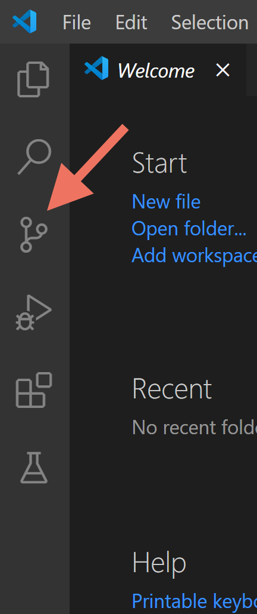

...then everything is working great so far. Continue on!
Click the Source Control icon in the left side, which looks like three circles connected by two squiggles:
FIXME need better screenshot here If you see a message like this:
...then either you forgot to quit and reopen Visual Studio, or your git installation didn’t work properly. Ask your instructor or a preceptor for help!
...then everything is working great so far. Continue on!